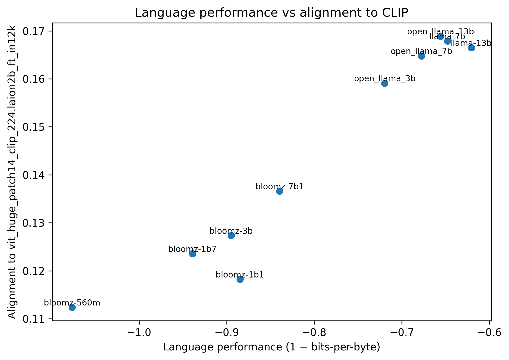
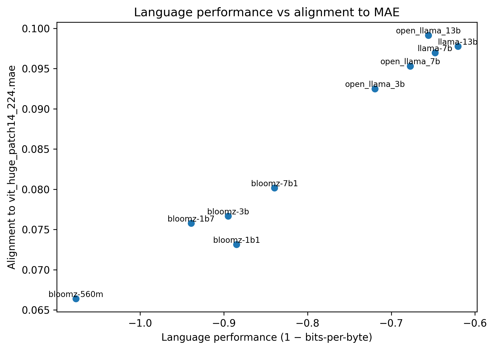
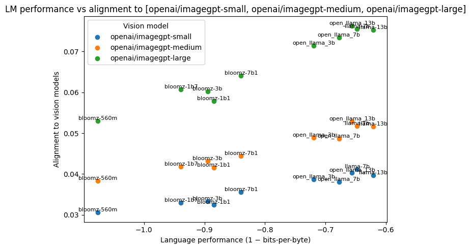
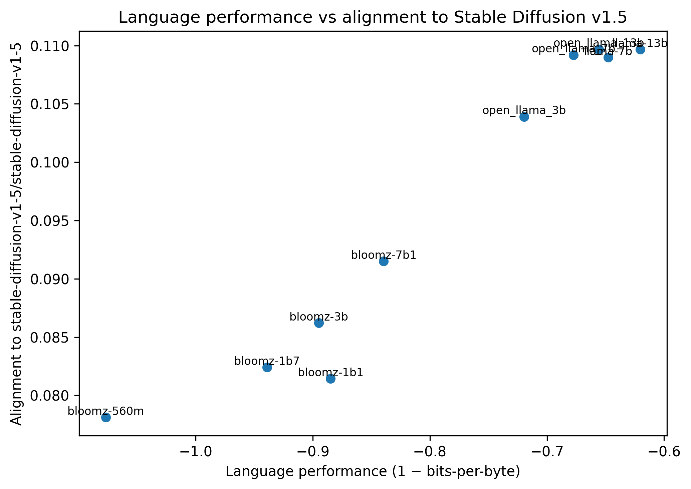
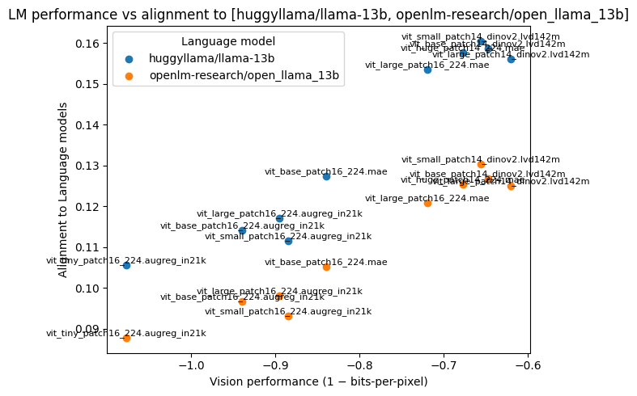
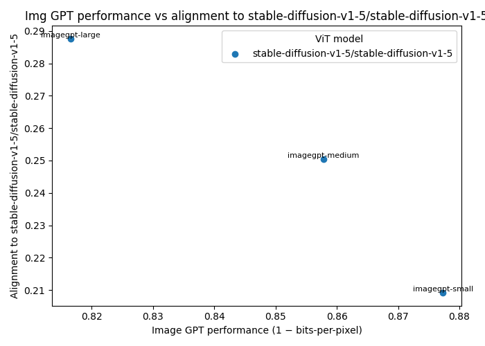
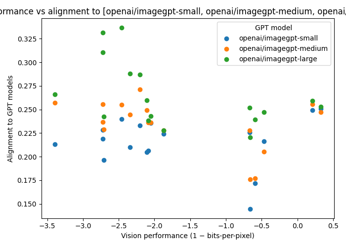
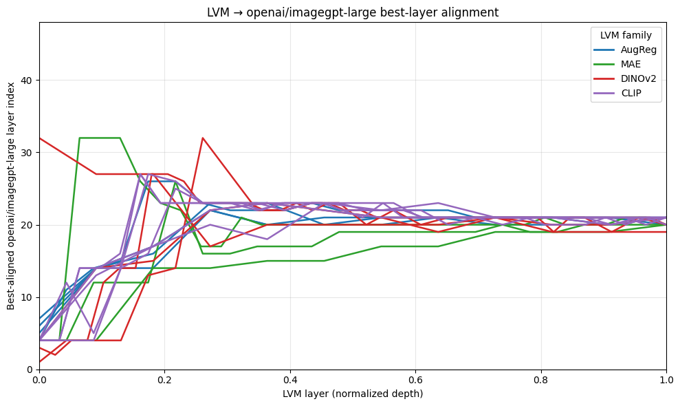
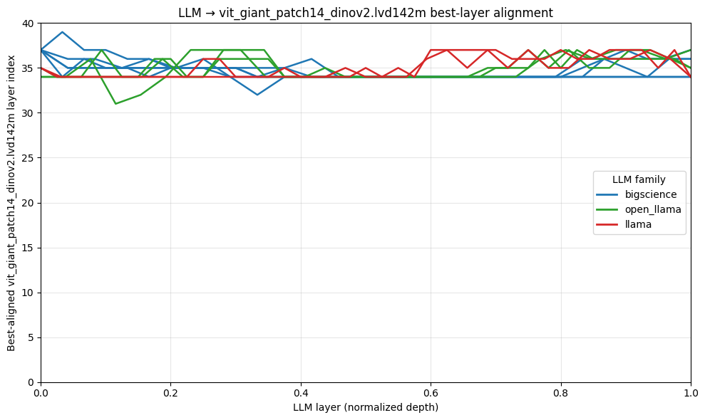
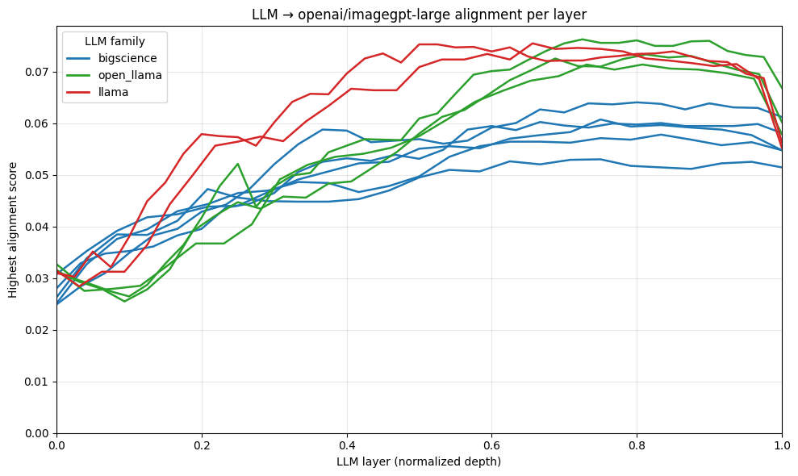

Recent advances across language, vision, and multimodal models suggest that modern AI systems may be converging toward increasingly similar internal representations. Huh et al. (2024) introduced the Platonic Representation Hypothesis, which proposes that neural networks with different architectures trained with different objectives on different data and modalities develop latent representations that converge to a shared model of reality. However, Huh et al. (2024) only examined the Platonic Representation Hypothesis for one class of language and one class of vision models.
In this paper, we argue that the Platonic Representation Hypothesis holds true for reasonably well-performing models, independent of modality and architecture, and find evidence of latent representation convergence through layer-level analysis. To mathematically quantify this convergence across different models, we will first formalize a few key concepts. Following Huh et al., 2024, we define the representation as a function that maps an input to a feature vector. A kernel is a matrix that describes how a representation computes pairwise similarity between datapoints: each row and column corresponds to a datapoint, with the pairwise similarity between a row and column’s datapoint stored in the corresponding matrix entry. A kernel alignment metric measures the similarity between two kernels. In our analysis, we use the mutual nearest neighbor metric to determine the similarity between the representation spaces of different models.
We will explore the representational similarity and kernel alignment across modalities, architectures, and within layers of a model.
Representational Similarity Across Modalities
Hypothesis and Motivation
Previous works show that the representation space of models converges across different modalities. He et al. (2025) demonstrated that independently trained vision-only and language-only models project inputs into a partially aligned representational space. Merullo et al. (2022) found that a vision model could be stitched to an LLM with a single linear projection at an intermediate layer and still maintain high performance on visual tasks. This indicates that vision and language models share a similar representation space despite being trained on different data modalities.
In Huh et al. (2024), they measured the alignment between a suite of vision and language models. They used the Wikipedia caption dataset (WIT) which pairs images with text captions and trained the vision and language models on these datasets. Then they determined the kernel for each of the types of models and found the kernel alignment using the mutual nearest neighbors metric. They found that the alignment between various LLMs and DINOv2 (a vision transformer) increases as LLM performance on various tasks increases. This indicates that higher performing LLMs develop representations that are compatible with vision models. However, this paper only discusses the alignment between LLMs and Vision Transformers (ViT), which raises the question – is cross-modality representational similarity only preserved when comparing LLMs with ViTs? In addition, the paper does not address the inverse – do better performing vision models develop a representation space that generalizes well to LLMs? We want to explore some of the limitations of this paper.
Methods
To determine if there is a positive correlation between cross-modality alignment and LLM performance, we trained various ViTs (DINOv2, CLIP, MAE, and AugReg) and generative image models (ImageGPT and Stable Diffusion) on the WIT dataset. We calculated the kernels for each of the language and vision models and found all pairwise alignment scores between each of the vision models and the LLMs using the nearest mutual neighbor metric. We used 1 – bits-per-byte to calculate the performance of the LLMs, replicating Huh et al. (2024).
We also wanted to determine if there is a positive correlation between cross-modality alignment and vision model performance. We used the same process as described above to calculate cross-modality alignment. Similarly to the LLM performance metric in the Huh et al. (2024) paper, we determined the average bits-per-pixel (bpp) for all the vision models and used the same metric (1 – bpp) to score the performance of each.
Results
First, we replicated the results of the Huh et al. (2024) paper and confirmed that the alignment from LLMs to DINOv2 increases as the performance of the LLMs increases. We also plotted the alignment from LLMs to non-ViT vision models, against the performance of LLMs, and found that this correlation pattern is consistent.
Figure 1: DINOv2 Alignment vs LLM Performance

Figure 2: CLIP Alignment vs LLM Performance

Figure 3: MAE Alignment vs LLM Performance

Figure 4: ImageGPT Alignment vs LLM Performance

Figure 5: Diffusion Alignment vs LLM Performance
We also plotted ViT alignment to the language model LLaMA-13B (Touvron et al. (2023)) across ViT performance. We found a strong correlation between model alignment and vision performance.

Figure 6: LLM Alignment vs ViT Performance
We confirmed and expanded upon the discoveries of previous works, showing that there is strong representational similarity between language and vision models. Figures 1-5 demonstrate that higher performing LLMs have a stronger alignment with various types of vision models. This indicates that better language models develop representations that align better with visual features and that these representations are more abstract and generalizable. We found that this holds true for different types of image models, independent of architectural and training differences. We also found that the inverse is true, as seen in Figure 6, where ViT alignment to LLaMA-13B increases as vision model performance increases. This indicates that higher performing vision encoders learn representations that align well with LLM representations. These results demonstrate that better LLMs align to DINOv2 and better ViTs align to LLaMA-13B, providing evidence that domain-general representations arise from high performing models despite the lack of cross-modal training. This supports the Platonic Representation Hypothesis by demonstrating that models learn representation spaces which converge independent of modality.
Discussion
We observe above that vision models also perform better when they are more aligned with language models. This insight may be explained by the shift from models which focus solely on low-level features in the input to those that capture high-level features as well. For language models, this would mean moving beyond local token frequency to also capture events, relations, etc. For vision models, this entails object identity, spatial layout, etc. instead of just edges and textures. This also supports the Simplicity Bias Hypothesis discussed in Huh et al. (2024), suggesting that deep neural networks exhibit an inductive bias toward simple solutions, and this bias becomes stronger as model size increases. This bias may drive the convergence of the models’ representations.
Representational Similarity Across Architectures
Hypothesis and Motivation
Since Huh et al. (2024) only demonstrated converging representations in LLMs and ViTs, we wanted to determine if this pattern would generalize to different model architectures. Prior work has shown mixed results: Raghu et al. (2021) compared ViTs and CNNs and found substantial differences in representation, while Wallin (2022) concluded that image-trained classification networks and Generative Adversarial Networks (GANs) learn very similar internal representations. Motivated by the inconsistency in these results and the findings in Huh et al. (2024), we decided to test a wider variety of image model architectures to determine if representational convergence generalizes to other vision models
We chose two generative image model architectures: ImageGPT and diffusion models. Like ViTs, ImageGPT models also use transformers as building blocks in their architecture; however, ImageGPT models typically use an autoregressive decoder not usually present in ViTs. Diffusion models differ even more from ViTs and ImageGPT, as diffusion models employ noising and de-noising to learn features and generate content.
Methods
For the diffusion model, we attach forward hooks to internal layers of the diffusion model’s UNet so that we can capture the hidden activations during a forward pass. These hooks act as listeners that record intermediate feature representations without modifying the model’s behavior. The feature extraction was done primarily in the denoising phase where the model is actively learning the representations of the input.
For the ImageGPT models, as we ran images through the models, we recorded the hidden representations from each transformer layer and pooled them into vectors.
With these internal representations from the models, we were able to generate the alignment scores amongst them.
Results
In Figure 7, we observe that ViT alignment scores to diffusion models increase as their bpp performance increases. This remains consistent with the findings from Huh et al. (2024) where LLM models with higher language performance scores also had higher alignment scores with ViT model DINOv2, suggesting that models do indeed converge toward a more accurate representation of reality.
Figure 7: Diffusion Alignment vs ViT Performance
However, in Figure 8, we observe the inverse relationship, where the alignment score between ImageGPT and diffusion models decreased as ImageGPT performance increased. Although this was an unexpected result, we do notice how the alignment scores between diffusion and ImageGPT models were higher for larger ImageGPT models than smaller models, which remains consistent with the findings from Huh et al. (2024).

Figure 8: Diffusion Alignment vs ImageGPT Performance
In Figure 9, we observe nearly zero correlation between the performance scores of the ViT models and their alignment to the ImageGPT models. While this result was also unexpected and inconsistent with the findings from Huh et al. (2024), similar to the second graph, we observe that alignment scores are higher with larger ImageGPT models. Thus, we still find that larger models show more convergence.

Figure 9: ImageGPT Alignment vs ViT Performance
Discussion
In the results above, we see that representations in ViT and diffusion models appear to align more than representations of either model with ImageGPT models. We attribute this difference in alignment to the architecture differences between models. Although ViT employs a decoder-only transformer and a diffusion model uses a noising and de-noising process, both models aim to capture high-level features of the image and determine the semantic structure. In contrast, ImageGPT models use an encoder-only transformer that focuses on capturing low-level features of an image that aids it in its primary task of next-pixel prediction. The differences in their architectures and objectives could likely explain why ViT and diffusion models share higher alignment scores.
We observed also that larger ImageGPT models shared higher alignment scores with diffusion and ViT models than smaller ImageGPT models. We theorize that this is due to larger ImageGPT models having more layers that allow them to capture more complex features, making the representation they learn converge more with the representations of ViT and diffusion models.
This reasoning is in line with the Capacity Hypothesis introduced in Huh et al. (2024), which suggests that larger models are more likely than smaller models to converge to a shared representation because larger models are more effective at finding an optimal representation.
Representational Similarity Across Layers
Hypothesis and Motivation
While previous literature provides evidence for representational similarity across modalities and architectures, the evolution of convergence across the layers of a model is less explored. Whether convergence emerges in early, middle, or late layers gives insight into what factors could be driving model convergence: is it shared input statistics, universal optimal latent representations, or a common goal? Recently, Kapoor et al. (2025) compared the layer alignments of many convolutional networks (ResNets, VGGs, AlexNets) and found that for randomly seeded models with the same architecture, earlier layers were more strongly aligned to each other than later layers, a trend they attributed to earlier layers capturing more systematic components of images and later layers more task-specific features. Another recent study claims that like CNNs, ViTs also encode increasingly complex concepts in deeper layers. Thus, we might expect that ViTs would also have earlier layers which are more aligned to each other than later layers.
We can also ask this question across architectures. Previous studies such as Raghu et al. (2022) have compared different vision architectures such as ViTs and CNNs, specifically ResNets. They found that the layers of a ViT exhibit uniform alignment across the model, in contrast to ResNets that exhibit strong locality, where earlier layers align closely with neighboring layers and much less with later layers. When comparing layer representations between the two architectures, they observed that approximately the first half of ResNet layers correspond to approximately the first quarter of ViT layers; in other words, a ResNet requires more layers to reach the same level of representation. Overall, these findings suggest that ViT layers hold more uniform representations than ResNet layers, despite the residual skip connections of ResNets.
Another open question is how well layers from models of different modalities align with each other. Choraria et al. (2024) compared two models, a CLIP based ViT and the Flan-T5-Base language model, and found that for both models, layers showed the most alignment to the opposite model’s final layers. This suggests that perhaps both models are taking different computational approaches to arrive at the same platonic representation. Here, we test whether this holds true for a class of transformer-based language models and both ViT and GPT-based vision models.
Methods
To test the layer alignments of a class of models to a candidate model, we computed kernels for each model layer and calculated (1) which layer of the candidate model aligned most per layer and (2) the resulting optimal alignment scores. By graphing the best fitting layer of the candidate model across layers of models in the model class, we can see how the most similar candidate model layer evolves through the layers of the models in the model class. By graphing optimal alignment to the candidate model across layers of the model class models, we can see whether convergence occurs early, in the middle, or late in the network.
Results
Within ViTs
First, we compare DINOv2 with other ViT models. Like Kapoor et al. (2025)’s analysis on CNNs, we find that layers are most closely aligned with neighboring layers; the corresponding DINOv2 layer that best aligns with a ViT layer tracks closely with its depth in the model, with the exception of AugReg which plateaus at layer 25 of DINOv2. However, in contrast to findings on CNNs, we find that layer alignment scores do not decrease throughout the model, but instead seem to initially increase and then stay constant at a relatively high alignment score around 0.4. These findings do not contradict previous findings that deeper layers of the ViT encode increasingly complex concepts; such layers could hold complex concepts that share similar as opposed to increasingly distinct representations.
Figure 10: DINOv2 Alignment Index vs ViT Layer
Figure 11: DINOv2 Alignment Score vs ViT Layer
Across Different Vision Architectures
Next, we apply the same comparison across different vision architectures, namely ViTs and ImageGPT. Although both use transformers, ViTs employ bidirectional attention for representation learning over patches, whereas ImageGPT uses autoregressive causal attention to predict future pixels.
We compare ImageGPT-large layers with ViT models and find that early layers ViT models align best with early layers of ImageGPT-large. However, at around 20% layer depth, ViT layers plateau in their preferred ImageGPT-large layer and are most similar to around layer 20 of ImageGPT-large, no matter the ViT layer depth. Alignment scores also show minimal trends, oscillating roughly between 0.15 and 0.30.
One explanation for these trends is that initially, both models are moving towards a shared platonic representation. However, after layer 20, ImageGPT-large begins to diverge from this representation, while ViT models continue to move closer. This would explain why ImageGPT and ViT layers are initially most closely aligned to layers of corresponding depth, until layer 20 is reached, at which point it becomes the most similar ImageGPT layer to each successive ViT layer. Chen et al. (2020), which finds that layer 20 of ImageGPT-large has the highest representation quality, supports this conjecture.

Figure 12: ImageGPT Alignment Index vs ViT Layer
Figure 13: ImageGPT Alignment Score vs ViT Layer
Across Different Modalities
Finally, we examine across modality layer-by-layer comparisons. When comparing DINOv2 layers with LLM models, we find that all layers of an LLM model, no matter the depth, are mostly similar to late layers of DINOv2. We also find that alignment score increases across layers, with a slight decrease in the last LLM layer.

Figure 14: DINOv2 Alignment Index vs LLM Layer
Figure 15: DINOv2 Alignment Score vs LLM Layer
Comparing ImageGPT-large layers with LLM layers shows similar patterns of increasing alignment across layers with a slight decrease in the last layer, although overall magnitude of alignment is much lower than when comparing DINOv2 and LLM layers. However, all LLM layers align best with a middle layer (layer 20) of the ImageGPT-large model – which, as seen in the previous section, is also the layer that ViT layers most strongly align with. This differs from the DINOv2 and LLM layer alignment results, where all LLM layers instead are aligned to late layers of DINOv2.
Figure 16: ImageGPT Alignment Index vs LLM Layer

Figure 17: ImageGPT Alignment Score vs LLM Layer
When comparing LLaMA-13B layers with ViT models, we find that all layers of a ViT model, no matter the depth, are similar to the last quarter of LLaMA-13B layers. Alignment scores start low but increase gradually, accelerating in the second half of model layers.
Figure 18: LLaMA-13B Alignment Index vs ViT Layer
Figure 19: LLaMA-13B Alignment Score vs ViT Layer
With all three cross-modality comparisons, we see the same trend that all layers of all models in one modality tend to align best with a small subset of layers of the other-modality model, with no dependence on layer depth. Furthermore, alignment scores increase across layers, which is compatible with the hypothesis that model convergence is driven by shared goals and optimal latent representations, rather than shared input statistics.
Discussion
Our layer analyses reveal that (1) unlike CNNs, transformer representations don’t diverge at deeper layers, (2) several models have distinctive, rather than uniform, layers that align well with many other models, (3) and cross-modal alignment increases with layer depth.
Overall, analyzing alignment across model layers reveals how representations in models of different architectures and modalities may be evolving towards a shared platonic representation. The non-decreasing changes in alignment across layers implies that a shared platonic representation is likely not due to shared input statistics, but rather a shared goal or optimal latent representation. Our analyses on LLMs, ViTs, and ImageGPT generate candidates for layers which are closest to a platonic representation, most notably layer 20 of ImageGPT-large. We also show that unlike CNNs, transformer representations don’t diverge at deeper layers.
Our analyses above suggest that representations move closer or farther from a platonic representation as they pass through layers. Figure 20 is a simplified hypothesis of how our tested models may be moving in relation to a platonic representation (PR). Since both ViTs and LLMs are always moving closer to PR, the best aligning layer for all layers of a model is the last layer of the opposing model, and layer alignment scores increase with depth. As layer 20 of image-GPT is its closest to PR, all layers of ViT and LLM models align best to it, with alignment scores increasing or plateauing with layer depth.
Figure 20: Layer Hypothesis Diagram
Conclusion
Implications
We found that alignment between models is independent of modality and increases with performance of the model, indicating that there is representational similarity across modalities. In comparing alignment scores across different vision model architectures, we observed that, generally, higher performing models also had higher alignment scores, suggesting that the models are extracting higher-level features from the input image. Finally, analyzing alignment on a model layer level offers a window into how representations across architectures and modalities evolve through depth and approach a shared platonic representation. These findings provide evidence that the Platonic Representation Hypothesis extends beyond the limited cases tested in Huh et al. (2024). The convergence of representations across language and vision models brings hope of more robust models and more seamless integration across different models, although it also introduces the concern of whether universal representations may also universalize biases in models.
Limitations and Future Work
We established that the Platonic Representation Hypothesis holds true across different modalities, specifically with language and vision. However, we did not generalize our methods and findings to modalities such as audio or robotics, which present challenges in kernel representation and cross-modal data acquisition. For audio model representations, it is difficult to compute the distance between different data points because of the inherent temporal nature of the data as well as the data’s different semantic categories, such as speech content (“a bell is ringing”) or sound events (the sound of a bell ringing). For robotics models like Vision-Language-Action (VLA) models, it is difficult to define a similarity metric between actions in the robot’s action space, since they are so context-dependent. In addition, for both audio and robotics models, there is very little cross-modal data compared to language-vision datasets.
While we observed high representational alignment across vision models with different architectures, we did not observe if the same trends are present in different model types such as audio models. Additionally, within vision models, we did not test on all vision model architectures such as CNNs. The models we used were also pre-trained models; future works could consider how alignment scores would evolve during training or fine-tuning.
Our layer level analysis has several limitations that suggest directions for future work. For example, layer-by-layer comparisons implicitly adopt a feed-forward notion of depth that may be unfair to modern transformers. In transformers, most computation is mediated through a shared residual stream, with attention and MLP blocks providing incremental updates rather than completely new representations. As a result, “layer index” may misrepresent information that is distributed across different attention heads. Future work could develop layer comparisons between transformers and other models that more accurately capture the flow of information in transformer architectures. Finally, these results are correlational: high alignment does not guarantee that models implement the same computation, and different input distributions or multimodal protocols might highlight different convergence patterns. Future work could employ more causal tests, such as by testing whether aligned layers are functionally interchangeable by swapping or projecting representations between models and evaluating whether this preserves task performance.
References:
[1]
Choraria, M., Wu, X., Basu, S., Sekhar, N., Wu, Y., Zhang, X., Singhal, P., & Varshney, L. R. (2024).
Semantically grounded QFormer for efficient vision language understanding.
arXiv preprint arXiv:2311.07449.
[2]
Chen, M., Radford, A., Child, R., Wu, J., Jun, H., Luan, D., & Sutskever, I. (2020).
Generative pretraining from pixels.
In Proceedings of the 37th International Conference on Machine Learning (ICML).
[3]
He, Z. W., Trott, S., & Khosla, M. (2025).
Seeing Through Words, Speaking Through Pixels: Deep representational alignment between vision and language models.
In Proceedings of the 2025 Conference on Empirical Methods in Natural Language Processing.
https://doi.org/10.18653/v1/2025.emnlp-main.1806
[4]
Huh, M., Cheung, B., Wang, T., & Isola, P. (2024).
Position: The Platonic Representation Hypothesis.
In Proceedings of the 41st International Conference on Machine Learning (ICML).
[5]
Jassim, S., Holubar, M., Richter, A., Wolff, C., Ohmer, X., & Bruni, E. (2023).
GRASP: A novel benchmark for evaluating language GRounding And Situated Physics understanding in multimodal language models.
arXiv preprint arXiv:2311.09048.
[6]
Kapoor, S., Srivastava, N., & Khosla, M. (2025).
Bridging critical gaps in convergent learning: How representational alignment evolves across layers, training, and distribution shifts.
arXiv preprint arXiv:2502.18710.
[7]
Merullo, J., Castricato, L., Eickhoff, C., & Pavlick, E. (2022).
Linearly mapping from image to text space.
arXiv preprint arXiv:2209.15162.
[8]
Raghu, M., Unterthiner, T., Kornblith, S., Zhang, C., & Dosovitskiy, A. (2021).
Do vision transformers see like convolutional neural networks?
In Advances in Neural Information Processing Systems.
[9]
Riochet, R., Sivic, J., Laptev, I., & Dupoux, E. (2020).
Occlusion resistant learning of intuitive physics from videos.
arXiv preprint arXiv:2005.00069.
[10]
Touvron, H., Lavril, T., Izacard, G., Martinet, X., Lachaux, M.-A., Lacroix, T., Rozière, B., Goyal, N., Hambro, E., Azhar, F., Rodriguez, A., Joulin, A., Grave, E., & Lample, G. (2023).
LLaMA: Open and efficient foundation language models.
arXiv preprint arXiv:2302.13971.
[11]
Wallin, T. (2022).
Structural comparison of data representations obtained from deep learning models (Master’s thesis).
KTH Royal Institute of Technology.